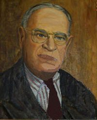

Our school opened in 1971 with additions completed in 1985, 1995, and 2002. The school was named for a prominent local lawyer, Isaac Ernest Weldon, who left a generous bequest of money to the Victoria County Board of Education, with the stipulation that the interest generated annually would be divided amongst graduating students in the County advancing to post-secondary education. Both Mr. Weldon and the school have come to be highly regarded for a philanthropic spirit. Students and staff contribute generously to Plan Canada, which supports children in developing countries around the world. Weldon ranks as one of the top contributing schools in Canada. We routinely raise significant funds through the following events: The Terry Fox Run, United Way campaign, Hoops for Heart, and Big Bike for Heart and Stroke. We also maintain a close relationship with A Place Called Home. Extra-curricular programs provide opportunities for students pursuing a diverse range of interests. In the school’s history, we have distinguished ourselves as participants at the local and provincial levels. These accomplishments have provided a basis for the on-going school spirit at Weldon.
